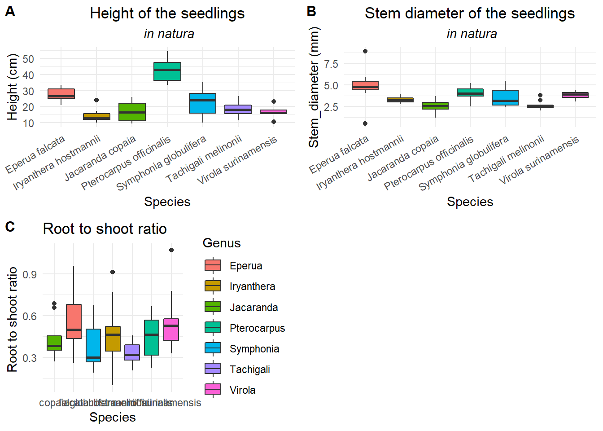
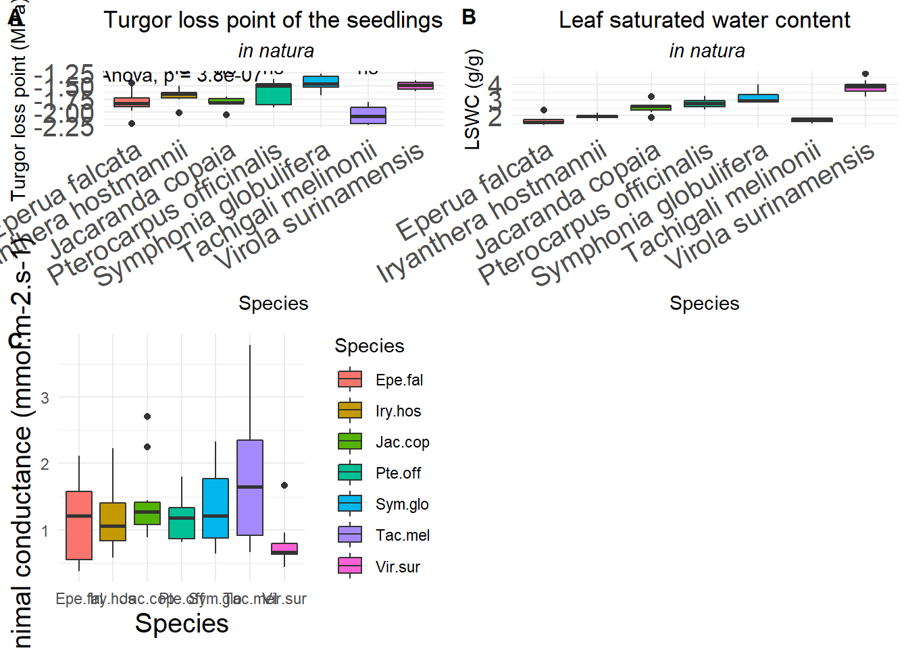
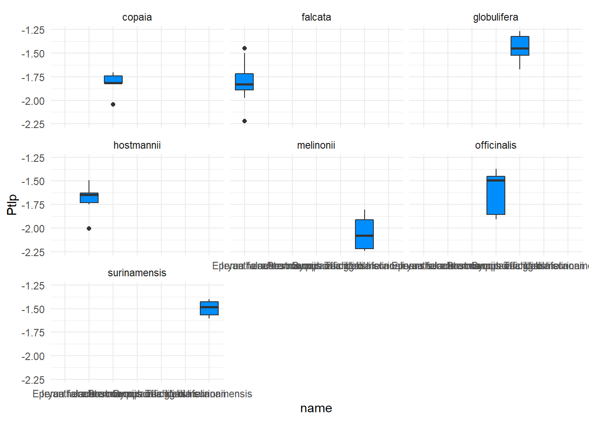
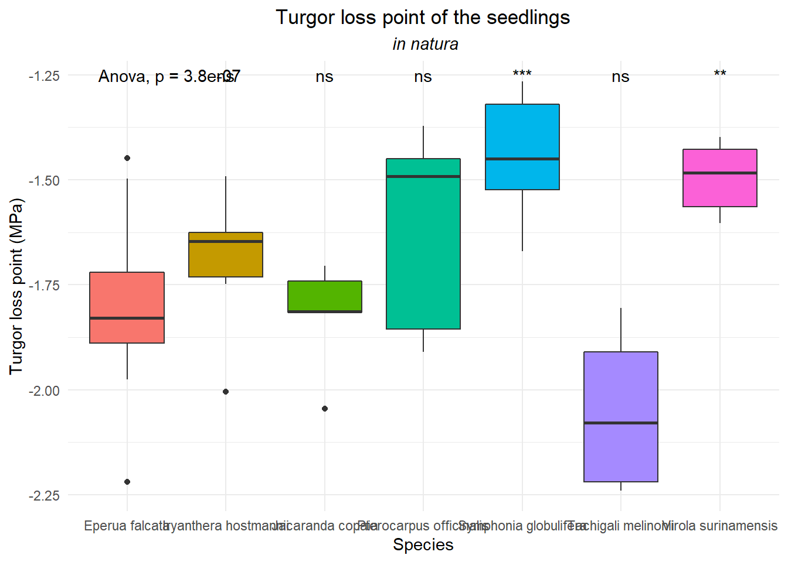
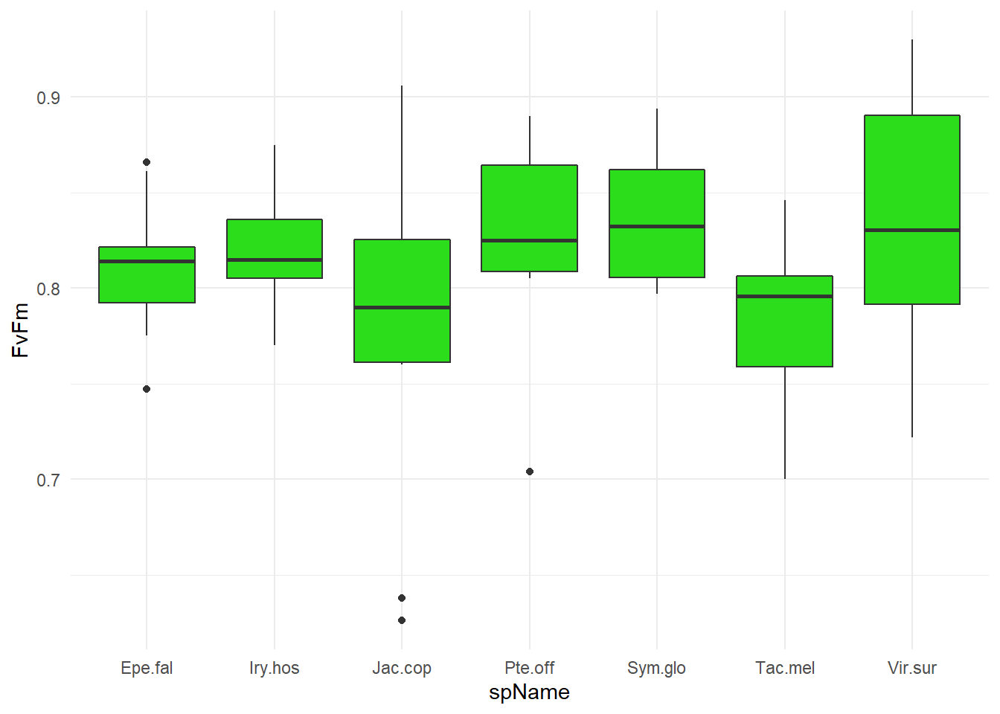
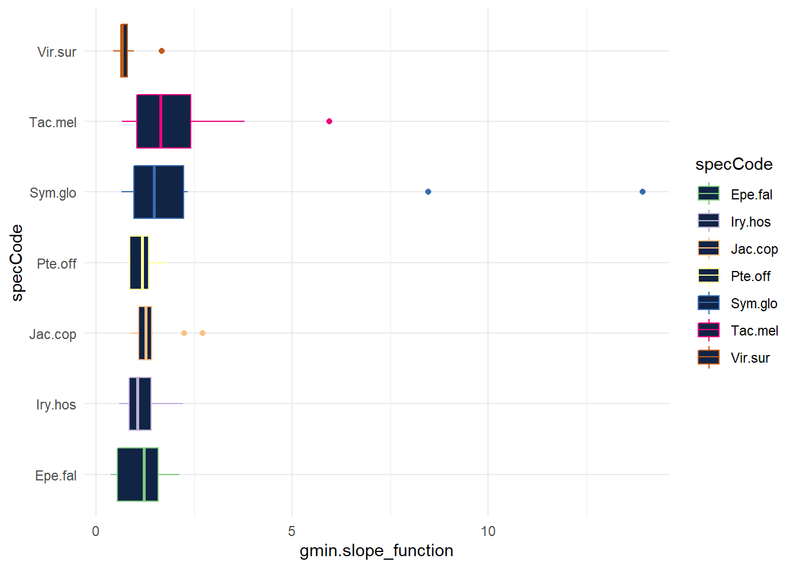
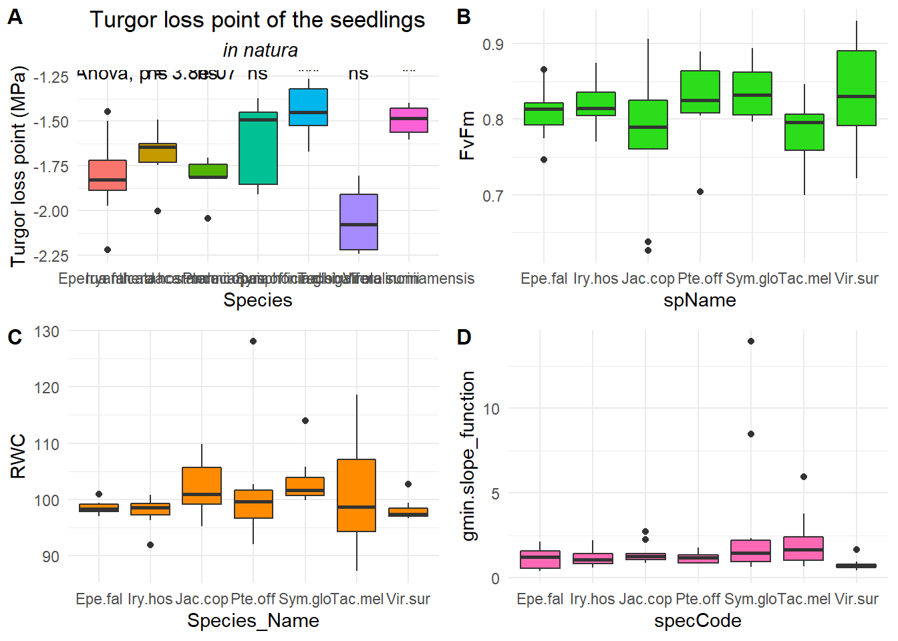

This book is in Open Review. I want your feedback to make the book better for you and other readers. To add your annotation, select some text and then click the on the pop-up menu. To see the annotations of others, click the in the upper right hand corner of the page
Chapter 3 Ecophysiology trait measurements
3.1 Leaf thickness
library(readxl)
SoftTraits <- read_excel("Natura_data/DRYER_infocollect_morpho.xlsx",
col_types = c("skip", "skip", "numeric",
"skip", "text", "text", "skip", "skip",
"text", "text", "skip", "skip", "skip",
"numeric", "numeric", "numeric",
"numeric", "numeric", "numeric",
"numeric", "numeric", "numeric", "numeric",
"skip", "skip", "skip"))
SoftTraits## # A tibble: 72 x 15
## Code Genus Species Habitat_pref Habitat `Height (cm)` `Stem_diameter ~
## <dbl> <chr> <chr> <chr> <chr> <dbl> <dbl>
## 1 1 Iryanthera hostman~ BF BF 24 2.79
## 2 2 Eperua falcata BF BF 25.5 0.51
## 3 3 Jacaranda copaia Generalist BF 12.5 1.21
## 4 4 Tachigali melinon~ Generalist BF 19.8 2.59
## 5 5 Symphonia globuli~ BF BF 12.7 2.58
## 6 6 Symphonia globuli~ BF BF 21.8 2.46
## 7 7 Iryanthera hostman~ BF BF 17.4 2.91
## 8 8 Symphonia globuli~ BF BF 10.2 2.38
## 9 9 Iryanthera hostman~ BF BF 11.8 2.84
## 10 10 Symphonia globuli~ BF BF 24 3.71
## # ... with 62 more rows, and 8 more variables: Nb_leaves <dbl>,
## # Nb_leaflets <dbl>, Leaf_width_1(mm) <dbl>, Leaf_width_2 <dbl>,
## # Leaf_width_3 <dbl>, Leaf_width_4 <dbl>, Leaf_width_5 <dbl>,
## # MeanLeafThickness <dbl>ggplot(SoftTraits) +
aes(x = Genus, y = MeanLeafThickness) +
geom_boxplot(shape = "circle", fill = "#112446") +
theme_minimal()
3.2 Seedling heights
library(ggplot2)
ggplot(SoftTraits) +
aes(x = Genus, y = `Height (cm)`) +
geom_boxplot(shape = "circle", fill = "#112446") +
theme_minimal()
3.3 Stem diameter
ggplot(SoftTraits) +
aes(x = Genus, y = `Stem_diameter (mm)`) +
geom_boxplot(shape = "circle", fill = "#112446") +
theme_minimal()
3.4 \(\pi_{TLP}\)

Figure 3.1: \(\pi_{TLP}\).

Figure 3.2: \(\pi_{TLP}\).
3.5 \(\frac{Fv}{Fm} in natura\)

Figure 3.3: \(\frac{Fv}{Fm}\).
3.6 \(RWC\)
Figure 3.4: \(RWC\).
3.7 Gmin
###Leaf area
I used following code in ImageJ:
run("8-bit");
setAutoThreshold("Default");
//run("Threshold...");
setAutoThreshold("Default");
setOption("BlackBackground", false);
run("Convert to Mask", "method=Default background=Light calculate");
run("Analyze Particles...", "size=1000000-Infinity display summarize");
setAutoThreshold("Default dark");LeafArea <- read_excel("Natura_data/2_gmin/LeafAreaFinalResultsDRYERnatura.xlsx", col_types = c("text", "text", "skip", "numeric", "skip", "skip", "skip", "skip"))
LeafArea## # A tibble: 72 x 3
## Species Code LeafArea_cm2
## <chr> <chr> <dbl>
## 1 Epe.fal 2 9.58
## 2 Epe.fal 19 23.0
## 3 Epe.fal 20 22.0
## 4 Epe.fal 21 20.0
## 5 Epe.fal 25 13.9
## 6 Epe.fal 28 22.2
## 7 Epe.fal 36 35.6
## 8 Epe.fal 43 17.6
## 9 Epe.fal 44 18.6
## 10 Epe.fal 45 17.4
## # ... with 62 more rows## Warning: package 'readr' was built under R version 4.0.5library(dplyr)
library(ggplot2)
Gmin <- read_csv("Natura_data/2_gmin/Gmin_DRYERwithLA.csv",
col_types = cols(idTree = col_skip(),
beta = col_skip(), file = col_skip()))
ggplot(Gmin) +
aes(
x = specCode,
y = gmin.slope_function,
colour = specCode
) +
geom_boxplot(shape = "circle", fill = "#112446") +
scale_color_brewer(palette = "Accent", direction = 1) +
coord_flip() +
theme_minimal()
3.8 Summary
